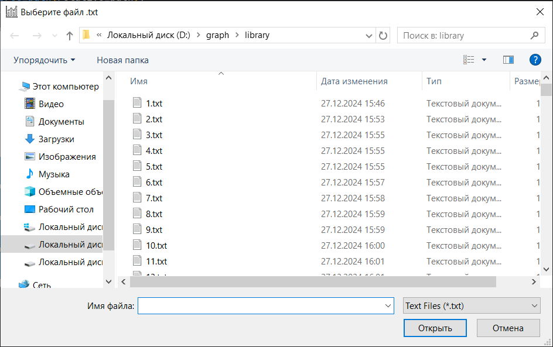

Если вам необходимо выбрать конкретный файл для построения графика, рекомендуется использовать функцию "Открыть график вручную".
При выборе этого варианта откроется диалоговое окно с папкой library, содержащей все доступные файлы.
Вы можете просмотреть список файлов, выбрать нужный файл и нажать кнопку "Открыть". После этого программа загрузит выбранный файл и отобразит соответствующий график.

Рис. 1 - Диалоговое окно выбора файла в папке library
Использование ручного выбора файла удобно, когда необходимо открыть конкретный файл без применения поиска или фильтров.
Если вы не уверены в названии файла или его параметрах, вы можете воспользоваться поиском файла.